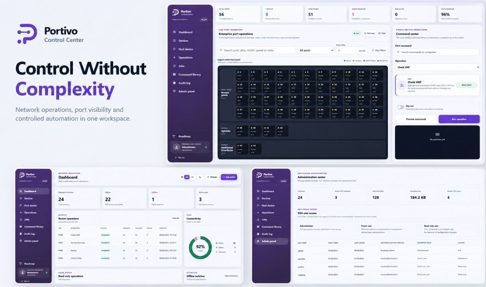

Know the estate
Maintain a central switch inventory organized by Site and Group. Track management identity, AOS family, availability, stack context and the latest observed state without storing shared credentials for normal user operations.
Portivo brings compatible ALE OmniSwitch fleets into one clear operational workspace for finding devices, diagnosing ports, executing controlled actions and preserving evidence.

Portivo combines the tasks operators repeat every day while keeping device access, authorization, execution and evidence inside one consistent control path.
Maintain a central switch inventory organized by Site and Group. Track management identity, AOS family, availability, stack context and the latest observed state without storing shared credentials for normal user operations.
Open a logical front panel with administrative state, carrier, alias, VLAN, media and PoE information. Supported stack members remain separate so the interface map reflects the actual chassis.
Search by MAC, IP, hostname, UNP identity or VLAN. Correlate ARP, forwarding, UNP and LLDP evidence, then rank likely edge locations without presenting an upstream observation as a physical endpoint.
Collect read-only link, media, error, PoE, MAC, UNP and neighbor evidence for one port. Unknown device output remains unreported instead of being converted into an unsupported conclusion.
Resolve actions against the detected AOS family, preview exact target commands, serialize work per switch and preserve a Job record for every target. Different switches can proceed concurrently without overlapping work on one device.
Monitor assigned UPS infrastructure through SNMPv3, route confirmed incidents to independent destinations and correlate switch loss with power evidence only when the available telemetry supports it.
One continuous workflow keeps the target, evidence, command preview, execution and audit history connected.
Search by MAC, IP, hostname, UNP identity or VLAN and correlate live fleet evidence.
→Inspect link state, media, counters, PoE, LLDP, MAC and recent activity in one read-only view.
→Preview verified catalog actions, choose targets explicitly and keep work inside per-device queues.
→Connect jobs, audit history, fleet findings and PDF reports to the action that created them.
Deep operational support without turning every task into a collection of disconnected utilities.
A logical front panel with live state, VLAN, media and controlled port actions.
Learn more →Evidence-led endpoint location with live SSH correlation and edge-port ranking.
Learn more →Nine read-only operational assessments with conservative evidence handling.
Learn more →Approved runbooks, variables, target limits, concurrency policy and schedules.
Learn more →Built-in and custom roles with exact capabilities and server-enforced scope.
Learn more →SNMPv3 UPS telemetry, incidents and protected-switch correlation.
Learn more →Portivo also covers the role normally handled by a separate desktop SSH client. Authorized engineers can open a persistent interactive terminal to a scoped switch, work directly with the native AOS CLI and keep device access inside the same secure operational workspace.
switch-01 login established
> show system
System name: switch-01
AOS family: AOS 8
Operational state: UP
> show interfaces status
Native CLI output streams directly
through the protected browser session.
>
Manual work, automation and audits use the same durable execution model, so operators can distinguish intent, progress, result and configuration persistence.
Choose an eligible action, explicit devices and only the parameters required by that action.
Review target-specific commands, compatibility evidence and the number of affected switches before execution.
Create a Job with one item per target. Per-device FIFO coordination prevents overlapping automated or terminal work.
Inspect output and terminal status, then use read-back evidence or a focused diagnostic to confirm the intended state.
Review pending configuration by switch and write to flash deliberately after operational validation.
Portivo treats AOS 6 and AOS 8 as independent command families, with dedicated driver identities, compatibility metadata and conservative runtime capability learning.
Direct CLI access remains essential. Portivo adds the shared context, safeguards and evidence needed to turn individual commands into a consistent operational process.
| Operational requirement | Manual SSH workflow | Portivo |
|---|---|---|
| Fleet inventory | Limited Device lists and operational context are maintained across separate files and sessions. | Integrated Switches, sites, groups, reachability and current observations share one workspace. |
| Endpoint location | Manual Engineers search devices one at a time and correlate results by hand. | Correlated MAC, IP, hostname, UNP and VLAN evidence is searched across the authorized fleet. |
| Repeatable operations | Variable Results depend on personal notes, command history and locally maintained scripts. | Catalog-driven Verified actions define compatibility, required inputs, commands and execution rules. |
| Change preview | Operator-led Commands and targets are reviewed manually before each session. | Built in Target-specific commands, compatibility evidence and scope are visible before execution. |
| Multi-device work | Script-dependent Concurrency, failures and partial completion require custom handling. | Controlled Jobs, target limits, schedules and per-device queues coordinate fleet work safely. |
| Audit evidence | Fragmented Terminal history and personal records must be collected and retained separately. | Centralized Jobs, outputs, activity history, findings and reports preserve operational evidence. |
| Access control | Device-level Authorization is commonly enforced independently on every switch. | Scoped RBAC Roles, capabilities and Site or Group scope are enforced by the application. |
| Interactive CLI | Available Direct native access through a separate terminal client. | Integrated A persistent browser terminal keeps native AOS CLI work inside the same controlled workspace. |
Portivo complements native CLI expertise. It does not hide the network. It gives operators a consistent way to discover, diagnose, execute and prove what happened.
Portivo runs as one service on Windows or Linux. It is designed for a protected management network with direct reachability to managed switches and UPS devices.
A FastAPI service provides the browser interface, authenticated APIs, schedulers, monitoring workers and WebSocket terminal path.
Manual and automated switch work uses SSH. Power monitoring uses authenticated and encrypted SNMPv3 profiles.
SQLite stores inventory, policy, Jobs, audit history, incidents and latest observations. Full traffic time series remain outside the product data model.
Use a trusted reverse proxy for HTTPS and WebSocket forwarding. Restrict browser ingress to authorized management networks.
Start with requirements, network security and the complete installation sequence.
Self-hosted control stays inside your management boundary, with deliberate safeguards around identity, credentials and action execution.
Read the hardening guide →User SSH passwords are session-only and never become shared switch credentials.
Unattended credentials and webhook endpoints are protected by the application secret.
Operational changes remain tied to explicit targets, jobs and activity evidence.
Designed for trusted management networks. Terminate TLS at a trusted reverse proxy and never expose TCP 8766 directly to the public Internet.
Essential product, compatibility and operational guidance for teams evaluating Portivo.
Explore complete documentation →Yes. The application service, database, inventory, policy, jobs and audit records run inside infrastructure controlled by your organization. Portivo is designed for a protected management network and does not require a hosted control plane.
Review system requirements →Portivo is deliberately focused on compatible Alcatel-Lucent Enterprise OmniSwitch environments running AOS 6 or AOS 8. The two command families use separate driver identities and compatibility metadata. Confirm exact device and action coverage before production use.
Review driver coverage →No software agent is installed on managed switches. Portivo communicates with compatible network devices over their existing management interfaces, subject to network reachability, credentials and the permissions configured by your organization.
Switch discovery, diagnostics, operations, automation and the interactive terminal use SSH. UPS monitoring uses authenticated and encrypted SNMPv3 profiles. Each protocol has a defined purpose and security boundary.
Review network security →Core switch management can operate inside an isolated management network when the Portivo host can reach its managed devices. Features that contact external destinations, such as configured outbound webhooks, require the corresponding network path. Updates and external resources must be handled according to your environment.
Authorized administrators can create a streamed backup of persistent application state and perform a controlled database import. Backups contain operationally sensitive information and must be encrypted, access-controlled, tested and retained according to organizational policy.
Read backup and restore guidance →Portivo is designed for controlled operational use, but production readiness depends on correct deployment. Use a supported host, a trusted HTTPS reverse proxy, restricted management-network access, tested backups, least-privilege roles and validated device compatibility. Begin with read-only workflows and a limited pilot before enabling changes.
Open the hardening guide →Do not publish sensitive vulnerability details in a public issue. Review the security guidance first, then contact the project privately at info@portivo.org with a clear description, affected version, reproduction conditions and potential impact.
Open security documentation →Explore installation, operations, automation, security, drivers and the complete reference.